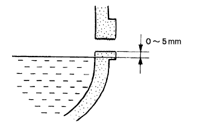

Differential oil (4WD) adjustment |
| 1. Differential oil inspection |
Remove the rear axle housing film plug and gasket.
|  |
Check that there is oil within 0-5 mm from the hole end of the rear axle housing fila plug.
If the amount of oil is small, replenish the oil after checking the oil leak.
Tighten the rear axle housing fila plug via a new gasket.
| 2. Differential oil replenishment |
Remove the rear axle housing film plug and gasket.
Replenish oil.
Check the amount of oil.
Tighten the rear axle housing fila plug via a new gasket.